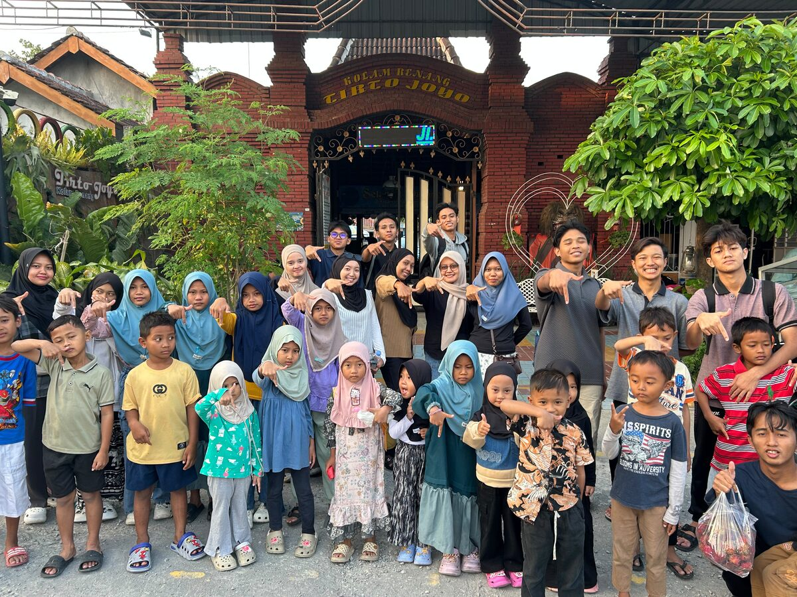

Warta Utama
Membangun Karya di Persimpangan Kode, Ilmu, dan Komunitas
Dari ruang belajar pesantren hingga baris-baris kode, Arya Wira Pratama merawat satu keyakinan sederhana: karya yang baik lahir dari kebiasaan yang konsisten.

Trenggalek — Perjalanan pendidikan Arya dimulai dari bangku taman kanak-kanak di Ponorogo, lalu berlanjut ke sekolah dasar, sebelum akhirnya menempuh pendidikan menengah di Pondok Modern Darussalam Gontor. Kini ia melanjutkan studi Teknik Informatika di Universitas Darussalam Gontor.
Di tengah jadwal kuliah, Arya menjadi staff IT Perpustakaan UNIDA Gontor dan aktif sebagai pengajar TPA. Baginya, bekerja dengan teknologi dan mendampingi belajar sama-sama melatih kesabaran, kejelasan berpikir, serta tanggung jawab.
Minatnya pada teknologi tumbuh dari rasa penasaran: bagaimana sebuah halaman web bisa bekerja, bagaimana logika sederhana dapat menyelesaikan masalah, dan bagaimana sebuah proyek kecil bisa membantu orang lain. Musik, coding, dan lari menjadi tiga cara ia menjaga ritme belajar.
Lelakon Anyar
Kabeh lelakon →


Warta Khusus
Kabeh karya →01Web
NusaTani
Aplikasi marketplace pertanian yang dikembangkan dengan Django, berfokus pada hubungan petani, pembeli, dan produk pertanian.
PythonDjango
Deleng repositori →
02Desktop Linux
IslamicHabits
Aplikasi desktop Linux untuk mencatat ibadah dan kebiasaan harian secara privat, dengan data yang tersimpan lokal.
PythonGTK4Linux
Deleng repositori →
03Pembelajaran
Maba
Dokumentasi dan materi pembelajaran selama kegiatan Maba.
PembelajaranDokumentasi
Deleng repositori →
Panyaruwe
Ada banyak cara untuk belajar teknologi. Sebagian orang memulainya dari teori, sebagian lain dari proyek kecil yang selesai. Arya memilih jalur kedua: membuat sesuatu yang nyata, sekecil apa pun, lalu mempelajari kesalahannya.
Baginya, coding adalah keterampilan yang paling jujur. Kode tidak peduli pada niat baik; ia hanya bekerja jika logikanya benar. Dari situlah ia belajar untuk teliti, sabar, dan tidak takut memperbaiki diri.
Pengalaman mengajar di TPA memberi warna lain: kemampuan menjelaskan hal rumit dengan bahasa sederhana. Dua dunia itu — mengajar dan membangun — saling melengkapi.
Ke depan, ia ingin terus menambah proyek, memperdalam dasar-dasar ilmu komputer, dan berkontribusi pada hal-hal yang bermanfaat bagi orang sekitar.
Pepatah Jawa
ꦮꦶꦮꦶꦠꦺ ꦲꦶꦱꦺꦴ ꦗꦭꦫꦤ꧀ ꦱꦏ ꦏꦸꦭꦶꦤꦺꦴ꧉
Wiwite iso jalaran saka kulino
Awalnya bisa karena terbiasa.
Iklan Baris — Kaprigelan
HTMLMarkup
CSSTata letak
JavaScriptInteraksi
ReactAntarmuka
C++Logika
PythonDasar
GitVersi
Linux FedoraSistem
Sesambungan
Untuk kerja sama, pertanyaan, atau sekadar menyapa, silakan hubungi melalui kanal resmi di bawah ini.